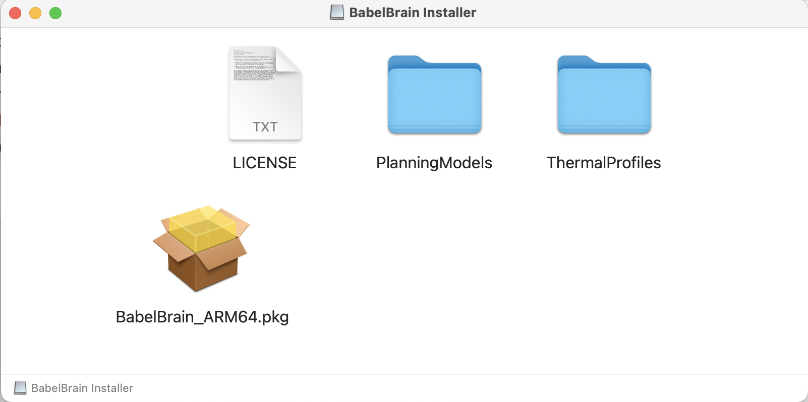

Installation and Running¶
Preliminary requirements¶
OS¶
Currently, macOS (ARM64, X64), Windows/Linux (X64) are supported. Windows users can run BabelBrain natively or via WSL2 with NVidia GPUs (see this guide).
GPU¶
BabelBrain supports GPUs enabled via CUDA, OpenCL or Metal. High-end GPUs (8 GPU RAM or more) are recommended. ARM64 processors (M1, M2, M3 families) in Mac systems with 16GB or more RAM are highly recommended. BabelBrain was designed with Mac systems based on Mx processors as primary targets.
Nvidia-based systems¶
Be sure that CUDA is properly installed. Visual Studio (commercial or Community version) must be also installed. Verify the version of Visual Studio is officially supported with the CUDA version. Visual Studio 2019 and 2022 Community versions works well with recent versions of CUDA. Please ensure Visual Studio has the 'Desktop development with C++' option installed.
Note for Intel-based Mac systems¶
Intel-based systems need to have a dedicated AMD GPU (internal or external via Thunderbolt). Intel-based iMac Pro and MacPro systems have internal GPUs suitable for sub 500 kHz simulations (i.e., Vega 56, Vega 64). An external GPU (i.e., AMD W6800 Pro) offers excellent performance and capability for high-frequency simulations.
Important note. Before v0.3.4, BabelBrain required having installed Blender for some CSG operations. This is not required anymore for v0.3.4 and up.
SimNIBS¶
While BabelBrain does not invoke directly SimNIBS tools, BabelBrain depends on the output generated by SimNIBS 4.x charm processing tools. Consult the Releases
section in SimNIBS for installation options.
Navigation-planning software¶
While not strictly required, it is highly recommended to use planning software to establish the target localization and orientation, called trajectory in the following through the documentation, of the ultrasound transducer for the simulation of transcranial ultrasound. The trajectory is just a transformation matrix in the T1W space that represents the translation-rotation of a vector describing the target and direction of ultrasound. BabelBrain can import trajectories defined in a proprietary software (Rogue Research's Brainsight) or open-source visualization software (3DSlicer). Instructions are detailed in the pipeline section of this documentation.
Starting with BabelBrain v0.3.2 and Brainsight v2.5.3, BabelBrain can be directly called from Brainsight, importing simulations automatically once the BabelBrain execution is completed.
Standalone application¶
Ready-to-use applications (no need for Python installation) for macOS and Windows are available in the Releases section. Please note that for macOS there are installers for ARM64 (M1 and newer Apple Silicon processors) and Intel X64, so be sure to pick the correct version matching your hardware.
For MacOS, open the DMG file and double-click on the package installer.

The first time you will use you may be prompted to authorize it to run and access directories. You may also need to authorize it in the Security settings of macOS.
For Windows, download the MSI installer file and run to install BabelBrain. Shortcuts will be created in the Desktop and Start menu. Note: CUDA 11.7+ must be installed.
Keep a copy of the PlanningModels and Profiles directories. PlanningModels contain STL files useful for the planning of TUS. Profiles contains examples of timings of the TUS exposure (total duration on, duration off, duty cycle).
Manual Installation¶
Python 3.9/3.10. Anaconda/miniconda is recommended. - if running in Apple ARM64 processors (M1, M1 Max, etc.), be sure to use a native ARM64 version.
Clone the BabelBrain repository. The code can be run in a Python environment; consult examples of conda environment files in the repository. In macOS, a healthy XCode installation with command line tools is needed. For Linux, an LTS Ubuntu installation such as 20.04 with a CUDA installation. For Windows, Visual Studio 2019+ with CUDA 11.7+.
Running¶
Standalone application¶
Open BabelBrain from the Applications section in macOS or in Windows from the Start Menu.
Manual execution¶
Activate the conda environment, change to the BabelBrain/BabelBrain directory and execute
python BabelBrain.py
Building standalone application¶
A pyinstaller specification file is provided to build the macOS and Windows applications. In the BabelBrain/BabelBrain directory run
pyinstaller BabelBrain.spec --noconfirm
A new application will be created at BabelBrain/BabelBrain/dist/